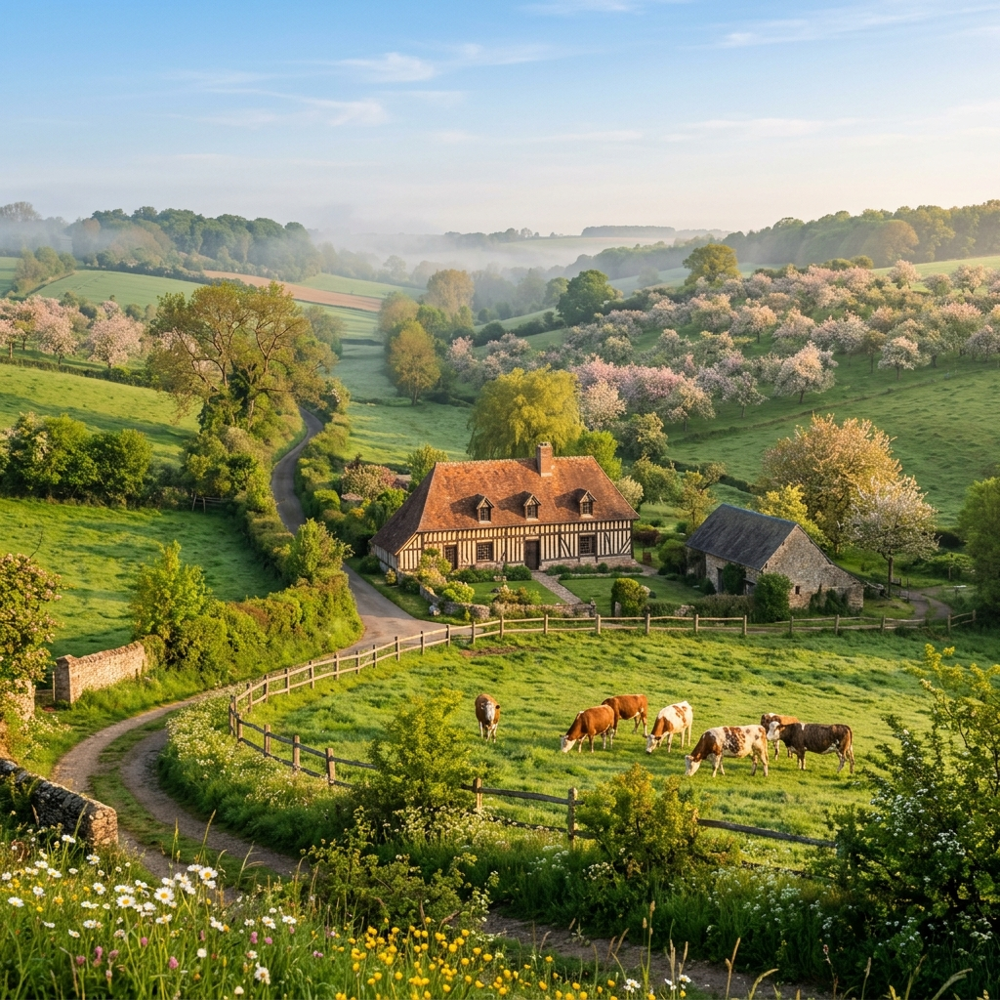

Normandy's cuisine is defined by its legendary dairy, apples, and seafood. With the richest butter in France, world-famous cheeses, and the freshest oysters, every meal here is a celebration of terroir.
The region is equally celebrated for its Cidre (apple cider) and Calvados (apple brandy), produced in orchards that blanket the countryside in spring blossoms.
Must-try culinary experiences in Normandy
Invented in 1791 by Marie Harel, this soft, creamy cheese with a white rind is Normandy's most famous export. Best enjoyed with fresh bread and a glass of cidre.
Normandy's apple orchards produce the famous cidre (cider) and Calvados apple brandy, aged for up to 25 years. Don't miss a trou normand between courses!
Fresh oysters from the coast of Cancale and classic moules-frites (mussels with fries) are staples of Normandy's coastal restaurants.
Savory buckwheat galettes filled with ham, cheese, and eggs, alongside sweet crêpes drizzled with Calvados caramel — the ultimate street food.

Normandy cows produce the creamiest milk in France. The butter is legendary — rich, golden, and the foundation of French pastry-making.
The classic caramelized upside-down apple tart and bourdelots (whole apples wrapped in pastry) showcase Normandy's apple heritage.
Beyond the table — Normandy's rich cultural tapestry